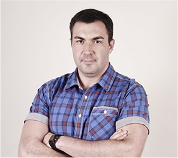

«Старт в карьере web-разработчика с 0» для тех, кто давно хотел зарабатывать больше работая в IT, но не знал, где реализовать себя
Открой для себя способ начать карьеру в сфере IT
/ Без математического склада ума, работая в комфортных условиях по приятному графику над интересными задачами и получая доход в $$$.
/ Без математического склада ума, работая в комфортных условиях по приятному графику над интересными задачами и получая доход в $$$.
Хочешь работать в комфортных условиях и крутым коллективом? Хочешь получать зарплату в 2-3 раза выше, чем средняя в твоем городе без необходимости переезжать?
Хочешь работать в комфортных условиях и крутым коллективом? Хочешь получать зарплату в 2-3 раза выше, чем средняя в твоем городе без необходимости переезжать?
Тогда Возможно, тебе тоже
[ пора начать зарабатывать в IT?_ ]
Если ты:
Устал бояться кризисов изменений власти и просто хочешь зарабатывать достойные деньги для себя и своей семьи, спокойно и с уверенностью смотреть в будущее
Задолбался впахивать как ломовая лошадь 250 дней в году чтобы на 1,5 недели съездить в Турцию с детьми, где они вымотают тебя окончательно
Хочешь наконец-то найти такой вариант заработка чтобы зарабатывать хорошие деньги и все еще иметь время на любимые «танки»
Устал приходить утром в нудный офис где все корчат дружелюбных, а на деле каждый мечтает тебя «подсидеть»
Хочешь наконец-то делать интересные задачи и зарабатывать на этом достойные деньги работать и зарабатывать
Тебя пилит жена за то, что ты играешь в игры а на самом деле тебя просто достала рутина на работе и ты хочешь расслабиться
Хочешь сменить статус с «офисного планктона» на «крутого IT-шника»
Учишься в институте и уже понимаешь что по специальности работать не будешь
… тогда пришло время стартовать карьеру в веб-разработке, чтобы осуществить свои желания и раскрыть потенциал!
… тогда пришло время стартовать карьеру в веб-разработке, чтобы осуществить свои желания и раскрыть потенциал!
… тогда пришло время стартовать карьеру в веб-разработке, чтобы осуществить свои желания и рас- крыть потенциал!
[ Вот сухие факты_ ]
IT-отрасль — №1 в СНГ по выводу денег с фрилансерских бирж и по росту количества вакансий.
1-е [ Место ]
[ По аутсорсингу среди стран Восточной Европы ]
Количество вакансий для web-разработчиком в Украине постоянно растет (на 18% ежегодно).
20 [ тыс. ]
[ Новых рабочих мест в IT появляется ежегодно ]
3-й
[ По объему экспорта сектор экономики в Украине ]
$ 2000
[ Средняя зарплата специалиста отрасли ]
По данным крупнейшего ресурса фрилансеров Upwork: «Украинские разработчики в среднем получают от 20 до 30 $/час»
За IT сытое и стабильное будущее
Тебе не придется парится где взять работу/пенсию/доход.
Мир будущего в твоих руках. Если ты хочешь зарабатывать больше денег, быть уверенным в будущем и получить статус успешного человека — ты можешь получить это все, стартовав карьеру в IT как можно скорее!
[ при этом Кроме цифр_ ]
У web-разработчиков есть и другие преимущества, которые тебе понравятся...
работаешь в удобное время
— Обычно перед разработчиком ставят задачу и срок, а когда делать работу — решаешь ты;
можешь сам выбирать работодателя
— Ты можешь пойти работать в крупную компанию, или наоборот в молодой стартап;
огромная перспектива для роста и развития
С возможностью перейти на работу в международную компанию, переехать в другой город или страну,
получить статус успешного человека
Который сделал свою жизнь жизнью мечты, добился успеха, обеспечивает себя и свою семью
[ Смотри, как обычные люди ... ]
Которые даже в школе не изучали программирование, без гениальных навыков в математике, невероятных талантов природных способностей и блата сделали свой прорыв в IT!
Nina Miroshnychenko
Мені дуже сподобалися курси від GoIT (пройшла першу частину Frontend восени 2017р.)! Я випадково знайшла ці курси у Facebook. Пройшла пробний тест. Потім зі мною зв’язалися і пояснили всі деталі навчання. Мені було дуже цікаво, але все ж були й сумніви. Проте я пішла на курс і не пошкодувала ні разу! У мене був надзвичайний ментор — Alexander Repeta. Матеріалу було багато, вебінари були насичені, все зрозуміло пояснювали, жодне питання не залишилося без відповіді, завдання теж швидко перевіряв. Soft Skills викладав Антон Чорний, і теж було цікаво. Стільки всього нового, з цікавими прикладами. З організаційними та технічними питаннями проблем не було: були всі доступи і весь матеріал. Навчання було нелегким. Потрібно багато часу щоб розібрати матеріал, інколи і вебінари повторно проглядала. В результаті маю гарні знання та сертифікат ) Також команда GoIT допомогла мені знайти перше місце роботи — за це окремо дуже дякую! Тепер я знаю куди звертатися за знаннями ))) Я рада, що GoIT розширює напрямки курсів — це здорово і дуже потрібно! Дякую!!!
Ekaterina Illarionova
Отличные курсы для взрослых людей. У каждой группы есть менеджер который всегда поможет в организационных вопросах, несколько менторов к которым можно и нужно обращаться по учебным вопросам, есть возможность учавствовать в реальном проекте во время/после курса, есть возможность посещать speaking club для прокачки разговорного английского, а так же занятия «soft skills», после которых ты будешь понимать что такое Agile, Scrum, и прочие немаловажные вещи для современных IT компаний. Расчитывать на магию не стоит — какими бы хорошими курсы не были, обучение требует времени и энергии. Если ты не готов тратить свои ресурсы на достижение цели, потому что работа/друзья/варкрафт — то дела не будет. Но если готов стараться, GoIt станет отличным инструментом в начале твоего IT пути и непременно окупится сторицей. У меня было именно так. За время обучения, у меня не было проблем ни с коммуникацией, ни с учебным процессом в целом. Формат обучения для меня был довольно необычным, и по началу я к этому скептически отнеслась, но буквально через неделю втянулась и поняла на сколько этот формат подходит именно для меня! За относительно короткое время, я приобрела массу полезных знаний и навыков, бесценный опыт и познакомилась с замечательными людьми. Могу честно признаться, что все мои однокурсники, которые старательно и ответственно относились к своему обучению нашли работу после окончания курса (а некоторые и еще во время обучения)
Natalya Ivanova
Обдумуючи те, що відбулося зі мною за останній рік (я почала вчитися у вересні 2016-го), розумію, що курси Go Front End були переламним досвідом. Зараз спробую пояснити, і не очікуйте, що це буде якийсь «сліпий захват». Протягом трьох років перед тим я вивчала програмування та веб-розробку на різних онлайн-курсах. Успішно закінчила (з сертифікатами 95%+) більше десяти, і серед них були дуже круті — від MIT, Stanford, Rice... і навіть від Microsoft та від W3C. Абсолютно безцінна база і досвід навчання, за який я у вічному боргу перед винахідниками інтернету та ПК! Але. (Це для тих, хто любить повторювати, що ютуб повний безкоштовних тьюторіалів, і т.п.). Але, прийшовши на курси GoIT із фронтенду, де було хай навіть не 50/50 офлайну, хай навіть менше (насправді складно порахувати), я відчула, як по мені пройшовся танк. Як отримані десь «у віртуалі» знання тепер треба випробовувати реальним досвідом, показувати свої роботи живим людям, заповнювати лакуни, доводити релевантність своїх навичок на сеансах «живого коду» чи хакатонах, вислуховувати «ай-ай-ай» від ментора, захищати чи корегувати свою думку, розв’язуючи кейси «домашок» (хто як, а я досі запускаю у браузері деякі свої роботи по JS — вони мені служать як простенькі, але практичні десктопні програмки). Не встигла я прийти до тями після шоку з початком навчання, як з нетрів інету визирнув Антон — викладач модулю Soft Skills (тоді він був просто викладачем, а тепер... о-го-го, хто він)). Уже після першого вебінару стало зрозуміло, що ця людина по-справжньому закохана у свій предмет і дуже хоче поділитися всім, що знає. А ще — має безліч живих ідей та ентузіазм їх утілювати. Не минуло, здається, й місяця, як ми, курс GoFE6, отримали цьому нове підтвердження: вступивши у творчу змову з нашим ментором Марком, Антон запропонував нам розділитися на команди і зробити власні проекти, використовуючи знання з фронтенду, а також технологію скраму. Так ми стали першопрохідцями проектного навчання в GoIT :) Це було дуже складно, з безліччю підводних каменів, про які ніхто не здогадувався на старті. Але досвіду, самовідданості та фаховості цих двох людей — Марка й Антона — вистачило на всіх нас. А ви знаєте, що таке проекти? Це саме те, що ви будете показувати роботодавцям, не маючи і місяця так званої «справжньої» роботи (проблема більшості новачків в ІТ). Проекти — це те, що роботодавця зацікавить. Бо воно — унікальне, ваше, робоче, «живе»... Що тут казати. Завдяки своєму проекту (де я стала також тімлідом, теж нічого-собі досвід) вже за місяць після випуску з курсів я втрапила на першу роботу — у стартапі, який хлопці вирішили розробляти на Angular 2 — опа, сюрприз..., а далі... А далі це вже сніговий ком. Тепер у мене шість проектів (три з них так чи інакше пов’язані з GoIT) та новий оффер. Ну, а вже потім, на наступних потоках, з’явився React, Redux, WebSockets і те, про що хлопці-дівчата вже нижче у своїх історіях-відгуках писали... І взагалі, я бачу, куди GoIT рухається, куди розвивається за буквально останні місяці, і це дуже круто: люди роблять висновки, горять ентузіазмом до якісних змін, прислухаються до актуальних трендів і не бояться ламати стереотипи. Молодці, всім би так! Особливо скигликам ))
010203
HARD
[ Однако предупреждаем_ ]
Получить навыки, нужные, чтобы зарабатывать в IT может быть долго и сложно…. !
непонятный «программистский» язык
От которого у нормального человека просто пухнет голова
неясно, что именно читать и учит
Чтобы не просто знать, но и получить реальную работу.
в Интернете полно теории
Однако теория не ведет к деньгам, она просто отнимает твое время
легко сдаться и все бросить
Без поддержки и источника мотивации
проще пойти раздавать листовки на улице, чем продолжать
Если ты не видишь быстрого роста навыков и денежного «выхлопа» от изучения
[ Поэтому так много людей_ ]
Которые пытаются получить IТ специальность — обламываются и бросают, а в обществе процветает мнение, что для хорошего заработка в этой сфере нужно быть математическим гением-задротом…
... однако на самом деле
Так как Васерман выглядят только программисты, которые готовы жизнь положить на проекты типа "сделать новый Windows" ...
Им действительно нужно быть гениями, днями и ночами ковыряться в бесконечном коде, забивать на себя, на отношения, даже иногда на гигиену.
... однако на самом деле
Так как Васерман выглядят только программисты, которые готовы жизнь положить на проекты типа "сделать новый Windows" ...
Им действительно нужно быть гениями, днями и ночами ковыряться в бесконечном коде, забивать на себя, на отношения, даже иногда на гигиену.
Но если ты не хочешь углубляться в дебри программирования
А просто хочешь заниматься интересными проектами и хорошо при этом зарабатывать, и иметь время на личную жизнь…
Тогда сейчас перед тобой есть другой путь — стартовать карьеру в IT с позиции разработчика веб-приложений или сайтов.
[ Карьера веб- -разработчика_ ]
Это твоя возможность зарабатывать в IT без необходимости изучать тонны нудной теории, которая не ведет к заветной работе и деньгам
Веб-разработчик — Это специалист, который делает красивые сайты, интересные приложения, и всякие «клевые штуки», за которые хорошо платят… при этом стать разработчиком может каждый, у кого была в школе 4ка по информатике и у кого достаточно желания и упорства.
[ 4 простых шага чтобы начать_ ]
Делать сайты, за которые тебе будут готовы платить хорошие деньги
01.
Установить программыНужные для создания сайтов (они установятся даже на обычном офисном компьютере)
02.
Разобраться в терминах web-разработки
03.
Знать как делать все элементы сайта
04.
Уметь это все подключитьЧтобы сайт полноценно работал
… и это все, что нужно, чтобы устроиться на работу web-разработчиком!
[ Для записи — курса _ ]
Мы привлекли одного из лучших экспертов по разработке сайтов в СНГ: Александра Лущенко - любимого преподавателя студентов-новичков

Front-end Senior developer
С опытом 10 лет в разработке
Разработал бизнес-решения в web
Для реализации инициативы Барака Обамы «THE PRECISION MEDICINE INITIATIVE»
7+ лет преподавания
9,3 из 10
Уровень удовлетворенности его студентов
[ Он за руку введет тебя в профессию ]
И буквально «имплантирует» свои практические навыки в твой мозг, чтобы ты смог стартовать легко!
У него ушло более 7 лет чтобы создать систему обучения
Простую понятную, легкую не для «математических гениев», а для обычных людей, чтобы любой смог быстро начать карьеру в IT!
IT
Обычно обучение у Александра Лущенко стоит от 815 грн за час…
[ Однако только сейчас ]
У тебя есть возможность получить 1,5 часа пошагового обучения веб-разработке с Нуля до результатов… всего за 399 грн!
И сейчас ты можешь либо сходить купить продуктов на ужин… или:
Сразу получить навыки в IT
Которые тебе будут нужны в буду-щем для хорошего заработка в $;
Открыть, насколько легко
Которые ты видишь в Интернете и как ты сможешь делать такие же на своем компьютере;
Создать себе первый сайт в портфолио
Чобы иметь преимущество перед другими соискателями на любой проект или работу;
Обрести уверенность
Что ты можешь хорошо зарабаты-вать в востребованной профессии без необходимости быть гением или «задротом»
Получить нужные инструменты
Для старта и развития карьеры web-разработчика;
Перестань откладывать свое будущее
И свой большой прорыв, начни испытывать гордость от того, что ты действуешь и меняешь свою жизнь к лучшему